0% completed
Clean Architecture/Onion Architecture
On This Page
Know the Vocabulary
Part 1: The Problem Being Solved
Why Codebases Without Boundaries Fail the Same Way Every Time
The Dependency Rule
Part 2: The Concentric Ring Model
Visualizing the Structure
Part 3: Ring One: Entities (Enterprise Business Rules)
What Entities Are and Why They Are the Most Important Ring
What Entities Contain
How Entities Enforce Business Rules
The Stability of the Entity Ring
Part 4: Ring Two: Use Cases (Application Business Rules)
What Use Cases Are and How They Differ From Entities
The Input and Output Data Structures
The Ports That Use Cases Define
What Use Cases Must Not Contain
Part 5: Ring Three: Interface Adapters
What Interface Adapters Do and Why They Exist
Inbound Adapters: Controllers
Input Boundaries, Output Boundaries, and Presenters
Outbound Adapters: Repositories and Gateways
The Interface Adapters Ring's Own Imports
Part 6: Ring Four: Frameworks and Drivers
What the Outermost Ring Contains and Why It Is Deliberately Thin on Logic
The Composition Root
Part 7: How Onion Architecture Names the Same Things Differently
Part 8: How Clean Architecture Differs From Other Patterns
Clean Architecture vs Layered Architecture
Clean Architecture vs Hexagonal Architecture
Clean Architecture vs Domain-Driven Design
Part 9: The Testing Strategy
The Testing Pyramid in Clean Architecture
Part 10: When to Use Clean Architecture
The Pattern Is Justified When
The Pattern Is Not Justified When
FAQs
Key Takeaways
In 2008, Jeffrey Palermo published a blog post describing the Onion Architecture.
In 2012, Robert C. Martin (Uncle Bob) published a blog post titled "The Clean Architecture", describing an architecture with different names for its layers but the same fundamental structure.
He expanded the post into the book Clean Architecture in 2017, and engineers still cite both when they discuss the pattern.
Martin's post said openly that it combined several earlier ideas, including Alistair Cockburn's Hexagonal Architecture and Palermo's Onion Architecture. Palermo, in turn, wrote that Onion Architecture shares its central premise with Hexagonal Architecture. All of these patterns center on the same insight: put the business rules at the center, surround them with application logic, and push all infrastructure concerns to the outermost ring.
Dependencies always point inward, never outward. The innermost ring knows nothing about any outer ring.
The pattern goes by two names in the industry: Clean Architecture and Onion Architecture.
Hexagonal (Ports and Adapters) shares the same dependency rule. It differs only in how it names and subdivides the inside: a hexagon with in and out sides rather than concentric rings, and a flatter model of what sits within.
What all of these share is a reaction against the same failure mode. In codebases that suffer from it, business logic is inseparable from database technology, changing the ORM requires changing the business rules, and testing a use case requires starting a web server. The structure of such a codebase follows the first framework the team chose, not the business it serves.
Know the Vocabulary
This lesson uses the terms below repeatedly. Read them once now and return here when a later section needs one.
- ORM (object-relational mapper): A library, such as SQLAlchemy, that maps database tables to classes. Each such class is an ORM model, a persistence object rather than a domain entity.
- Coupling: The degree to which a change in one part of a system forces a change in another part.
- Repository: The class that reads and writes one kind of database record on behalf of the business logic.
- Interface: A declaration of the methods a class must provide, with no implementation. In Python, an abstract base class plays this role.
- Dependency inversion principle: A rule where the higher-level module owns the abstraction and the lower-level module implements it. Here, a use case defines the repository interface and an adapter implements it.
- Dependency rule: The rule that source code imports point only inward, so an inner ring never imports anything from an outer ring.
- Entity: A domain object in the innermost ring that enforces enterprise business rules, the rules that would exist even without software.
- Use case: A class in the second ring that runs one application workflow, such as CreateOrder. It accepts and returns plain data structures, never HTTP requests or ORM models.
- Value object: An immutable object defined only by its value, such as a Money amount, that checks its own validity when it is created.
- Port: An interface that the inside of the application defines for talking to the outside world. Driving adapters call driving ports, and driven adapters implement driven ports.
- Inbound adapter: A third-ring adapter, such as a controller, that turns external input into a use case call. Hexagonal Architecture calls it a driving adapter.
- Outbound adapter: A third-ring adapter, such as a PostgreSQL repository, that implements a use case's interface with one specific technology. Hexagonal Architecture calls it a driven adapter.
- Frameworks and drivers: The outermost ring, which holds the technology-specific wiring, such as the Flask app and the database engine.
- Composition root: The one place where the application creates its objects and connects them, usually at or near its entry point (a function in a startup file).
- Unit test: A test of one entity or use case that runs in memory, with no database or network. An integration test instead uses real infrastructure.
Part 1: The Problem Being Solved
Why Codebases Without Boundaries Fail the Same Way Every Time
Most applications that accumulate serious technical debt do not start with negligent engineering. They start with entirely reasonable pragmatic decisions: use the framework's conventions, put business logic in service classes, put database access in repositories, keep the controllers thin. This advice produces a workable codebase for the first year or two.
The problems emerge gradually and follow a predictable pattern.
A business rule ends up in a SQL query because it was easier to filter at the database level. Another rule leaks into a controller because the service class already had too many responsibilities.
An ORM model starts carrying domain logic because it was already the object being passed around throughout the application.
A use case that should be testable in isolation now requires a running database, a configured email service, and a populated test dataset to verify a single business condition.
A small example makes this concrete. A Django Order model has a cancel() method that checks the status, runs a query to release the reserved stock, and saves itself. Testing the rule "a shipped order cannot be cancelled" now needs a database, because the rule and the query live in the same method. In the Clean version, the Order entity's cancel() method checks the status and raises an error, and a CancelOrder use case releases the stock through a repository interface it owns. The same rule is then tested in memory, with no database.
By the time these problems are visible and painful, the coupling is pervasive.
Every file has multiple unrelated reasons to change simultaneously. Changing the database technology requires touching business logic files. Adding a new API endpoint requires understanding the database schema to understand which data is available. Testing any meaningful business behavior requires infrastructure setup that takes minutes, is fragile, and produces slow feedback.
The deeper structural problem is not the layers themselves. Layered (N-Layer) Architecture showed a design where the business layer defines its own repository and gateway interfaces, and the data access and integration layers implement them. That is dependency inversion at both outbound boundaries, toward the database and toward external services, and business rules in that design are tested with an in-memory stand-in for the repository and no database.
The problem is where the interface lives. In many real layered codebases the repository interface sits in the data access package, next to the class that implements it. The business package then imports from the data access package, so the source code dependency still points down toward the database. Nothing in the layered picture forbids that placement, and nothing stops ORM entities or transaction code from appearing in the business layer.
Ownership of the interface decides what a test has to load. When the business layer imports from the data access package, every business test loads that package and the database driver it imports. Every change to persistence types can also break business code. When the business layer owns the interface, a test passes in that in-memory stand-in and never loads database code.
Clean Architecture makes that inversion a rule at every boundary rather than a choice at some: instead of the business layer depending on infrastructure, infrastructure depends on the business layer.
The business layer defines what it needs. Infrastructure provides it.
The business layer does not know anything about what specific infrastructure is behind the interfaces it calls. This is not a convention. It is a structural constraint on imports at every ring boundary, which the team enforces in code review or with an import-checking tool.
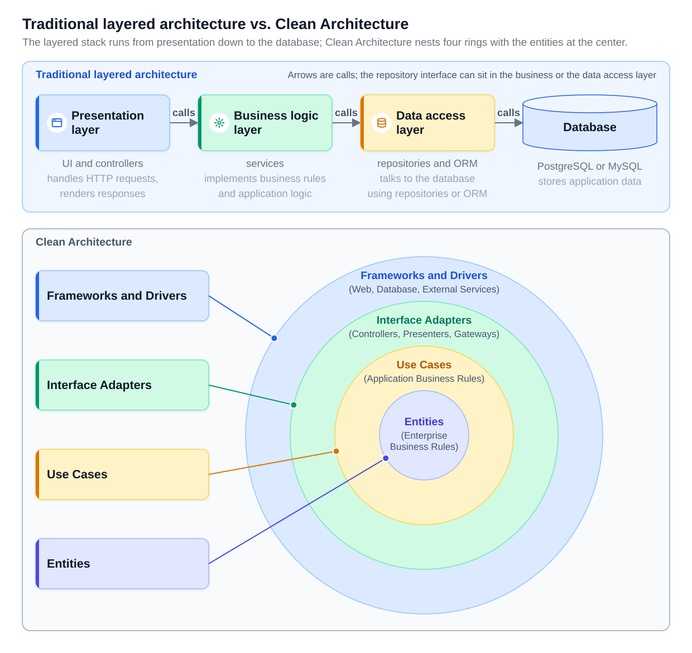
The Dependency Rule
The entire value of Clean Architecture rests on one rule, stated simply: source code dependencies can only point inward.
Nothing in an inner ring ever references anything in an outer ring.
An entity, in the innermost ring, imports nothing from any other ring.
A use case, in the second ring, imports entities but nothing from any ring outside itself.
An interface adapter, in the third ring, imports use cases and entities. It may use a database driver or an SDK to do its translation, but it does not depend on a web framework's request objects, and it never lets framework types cross inward.
The outermost ring can import everything but is itself imported by nothing.
The word "dependency" here means specifically a source code import. If a file in the entities ring contains the line import sqlalchemy, that is a violation.
If a file in the use cases ring contains the line from flask import request, that is a violation.
The violation matters even if the code works correctly in the short term. It means the ring boundary has been breached, and the testability and stability guarantees that the pattern provides have been degraded.
The rule is architectural, not merely stylistic.
A codebase that follows the dependency rule everywhere can be tested with the inner rings running entirely in isolation.
A codebase that violates it in even a few places loses the ability to test those areas without infrastructure, and that loss grows over time as more code builds on top of the violation.
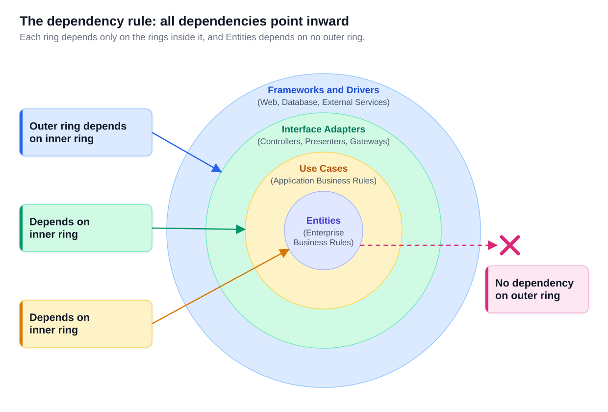
Part 2: The Concentric Ring Model
Visualizing the Structure
Clean Architecture is visualized as four concentric rings. Martin describes the rings as schematic: a system may need more or fewer than four, as long as every dependency points inward. The center is the most stable and most protected. Each outer ring is more volatile, more specific to a particular technology choice, and less protected by the architecture.
The text diagram below nests the four rings and numbers them from the center outward. Each arrow stands for a source code import, and every arrow points toward the center.
The rings are not organizational folders. They are dependency boundaries.
Code in ring three can import from ring two and ring one. It may use a third-party driver or SDK for its translation work, as Part 5 explains, but it never imports the application's own ring-four code, such as the Flask app or the composition root.
Code in ring two can import from ring one, never from ring three or ring four. The fact that a class is in a particular folder does not make it a member of a ring. What makes it a member of a ring is what it imports and what imports it.
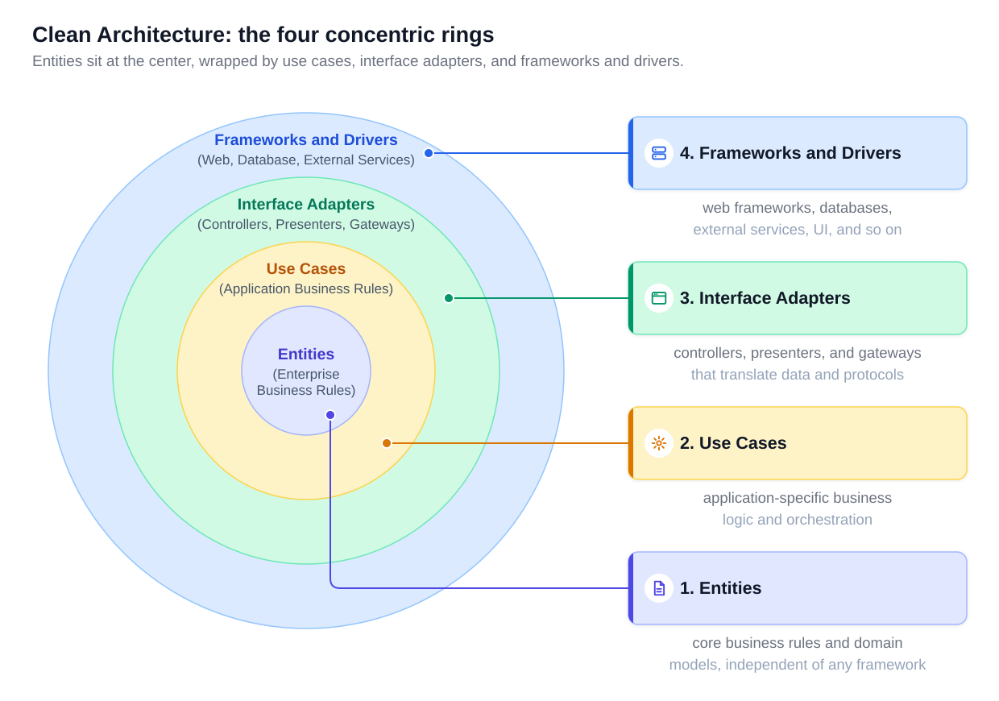
Part 3: Ring One: Entities (Enterprise Business Rules)
What Entities Are and Why They Are the Most Important Ring
Entities are the innermost ring and the foundation on which everything else is built. They contain the enterprise-wide business rules: the rules that would exist whether any application existed or not, and the rules that multiple applications in the same organization share. A business analyst could write these rules on a whiteboard without knowing anything about databases or HTTP.
The name "entity" in Clean Architecture means something more specific than an ORM entity or a database row object.
A Clean Architecture entity is a domain object that encapsulates the most general and high-level rules of the business.
In an e-commerce context, the rule that an order must have at least one item before it can be confirmed is an entity-level rule.
The rule that a payment amount cannot be negative is an entity-level rule.
The rule that a shipped order cannot be cancelled is an entity-level rule. These rules exist in the business regardless of which database, framework, or payment provider the application uses.
The word "enterprise" in "enterprise business rules" is significant. It means these rules would be worth expressing even if the software did not exist.
Before computers, businesses had policies, procedures, and constraints that governed their operations. Those policies are what Clean Architecture entities encode. They are the most durable part of the codebase because the rules they express change only when the business itself changes.
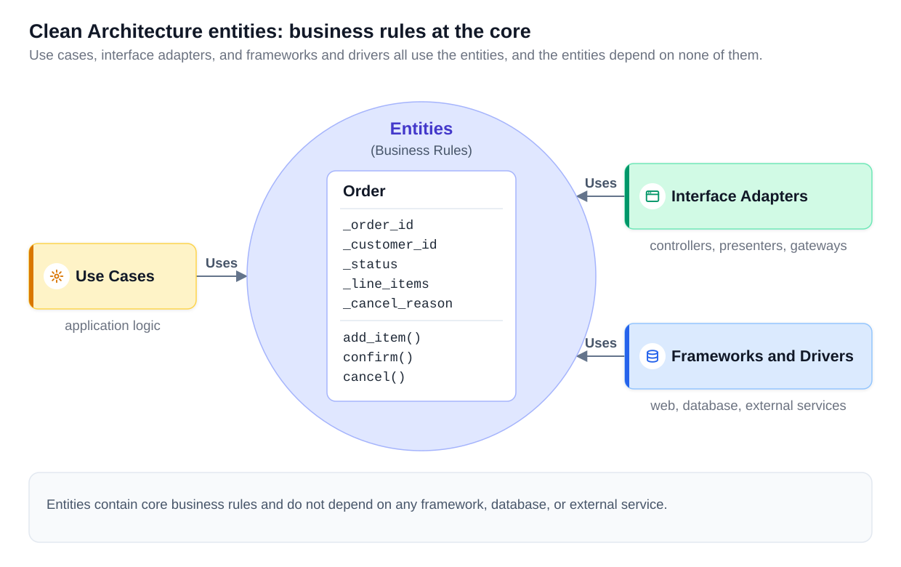
What Entities Contain
The Entities ring contains two kinds of things. Note that the word "entity" has two meanings in this lesson. Clean Architecture uses it for the whole innermost ring, while Domain-Driven Design (DDD), a set of patterns for modeling business domains, uses it for one kind of object inside that ring.
The first kind is domain objects with identity (DDD calls these entities): objects that change over time and carry state.
An Order that transitions from draft to confirmed to shipped.
A user account that transitions from active to suspended to deleted.
A subscription that transitions from trial to paid to cancelled.
The second kind is value objects: immutable objects defined entirely by their value rather than their identity.
A monetary amount, an email address, a geographic coordinate, a date range, a product SKU.
Value objects enforce their own validity on creation and are never modified: if you need a different value, you create a new object. This immutability makes them safe to share across the codebase and eliminates a large class of bugs where two parts of the code are unexpectedly sharing a reference to the same mutable object.
Both kinds of things in the Entities ring have one defining characteristic: they import nothing from outside the ring.
Not a database library.
Not a web framework.
Not a logging library. Not a cloud SDK.
Not even a third-party validation library.
The Entities ring is pure business logic expressed in the programming language's own constructs. The diagram below uses "entities" in the DDD sense, for the domain objects with identity.
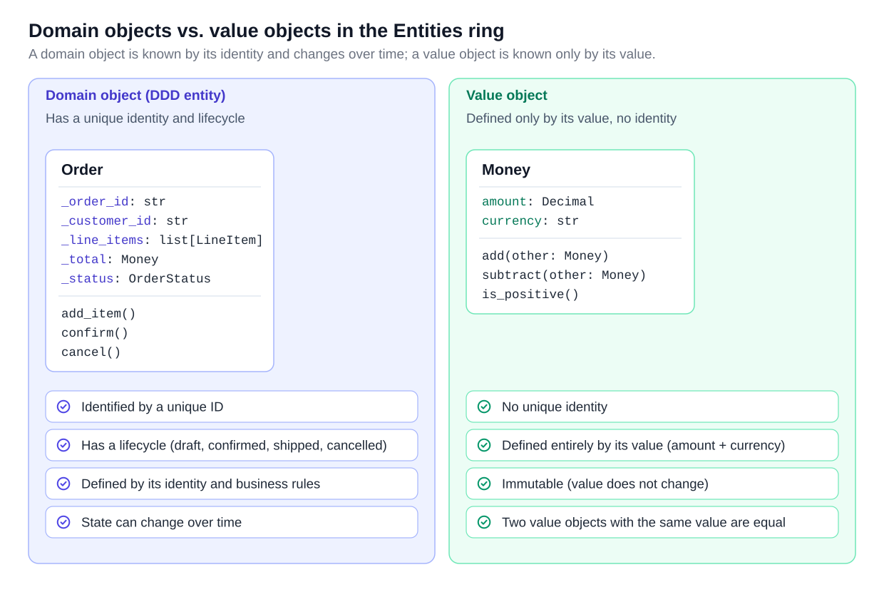
How Entities Enforce Business Rules
The pattern for enforcing business rules in entities is to reject invalid state transitions.
Instead of having a boolean is_valid flag that external code checks, the entity's methods raise a domain error if an operation would produce an invalid state.
Instead of allowing external code to set an order's status to any value it wants, the entity exposes specific methods (confirm, ship, cancel) that enforce the valid state transitions.
This means every piece of code that manipulates a domain entity goes through the entity's own methods.
No caller is meant to cancel a shipped order by setting a status field directly. In the Python version, the field is private only by convention, because Python does not enforce the leading underscore. Java, C#, JavaScript, and Go block access to it from outside the class or package. In every version, the cancel method raises a domain error for shipped orders.
The business rule is enforced structurally, not by hoping that every developer who ever writes code touching this object remembers to check the rule.
Value objects work similarly.
A Money value object raises a domain error if initialized with a negative amount.
An EmailAddress value object raises a domain error if initialized with an invalid format. The validation is not in a separate validator class. It is in the object itself, which means it runs automatically whenever the object is created.
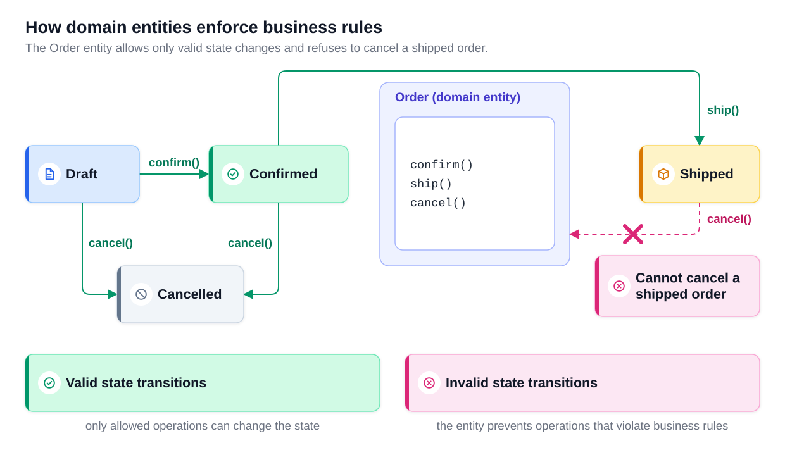
Here is a minimal illustration of the pattern.
Notice that the class imports only from the language's standard library and from other domain objects in the same ring.
There is no SQLAlchemy import, no Flask import, and no third-party library.
The code below is the Order entity from ring one. Every change to the order goes through add_item, confirm, or cancel, and each method checks its rule before it changes anything.
The key observation is that these rules are enforced regardless of who calls the method.
Whether the caller is an HTTP controller, a background job, a CLI script, or a test, the business rule is enforced by the entity itself.
The Stability of the Entity Ring
Because entities depend on nothing, they are the most stable part of the codebase.
When you change your database from PostgreSQL to MongoDB, the entities do not change.
When you switch from Flask to FastAPI, the entities do not change. When you replace your payment provider, the entities do not change. The entities only change when the enterprise-level business rules change, which happens infrequently and for business reasons, not technology reasons.
This stability is what makes the ring model valuable.
The most central code is also the least likely to change, which means outer rings can safely depend on it.
If the innermost ring changed frequently, the entire architecture would be unstable. Because the innermost ring holds only fundamental business rules, the code that every other ring depends on is also the code that changes least often.
Part 4: Ring Two: Use Cases (Application Business Rules)
What Use Cases Are and How They Differ From Entities
Use cases contain application-specific business rules. These are rules about what this application does, as distinct from what the business is. The entity ring encodes timeless business truths. The use case ring encodes the specific workflow of this application.
The distinction is meaningful and worth spending time on.
The rule that an order must have at least one item to be confirmed is a business truth. It would be true on paper, it would be true in a different application, and it would be true if this application were rewritten in full. This is an entity-level rule.
The rule that when creating an order, you should first check inventory, then reserve inventory, then charge payment, then confirm the order, then send a confirmation notification, then publish an event to the analytics pipeline is an application workflow rule.
A different application handling orders might not have an inventory service. It might charge the payment at a different step. It might not send email notifications. These choices are specific to this application's architecture and this application's product decisions. This is a use case-level rule.
Use cases are named after the operations the application supports. They read like the table of contents of the product's feature list: CreateOrder, CancelOrder, ApplyDiscount, ProcessRefund, GetOrderHistory, UpdateShippingAddress. A common convention, though not a rule Martin states, is to make each use case a separate class with a single public method, often named execute, that accepts an input data object and returns an output data object. Compare this with Hexagonal (Ports and Adapters), where one OrderUseCasesImpl class implements the create, cancel, and get operations behind one driving port.
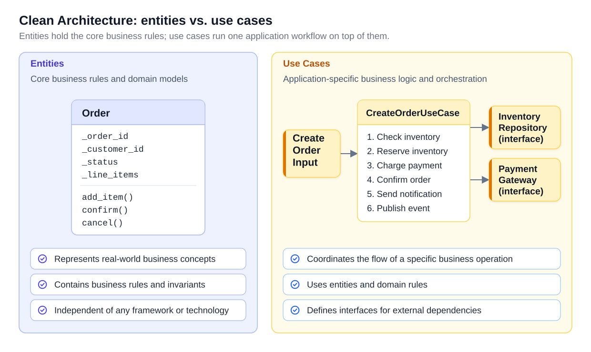
The Input and Output Data Structures
Clean Architecture specifies that use cases define their own input and output data structures, and that these structures are not domain entities. This is a subtle but important point that many implementations get wrong.
The input to a use case is a simple data container: a dataclass or named tuple that carries exactly the data this use case needs.
The CreateOrder use case's input carries the customer ID, the list of items the customer wants to order, and the payment method token. Nothing more.
It is not an HTTP request object. It is not a database model.
It is a plain Python dataclass defined in the use cases ring.
The output from a use case is similarly a simple data container: a dataclass that carries the result of the operation.
The CreateOrder output carries whether the operation succeeded, the order ID if it succeeded, the total amount, the currency, and an error code and message if it failed. Nothing more.
It is not a Flask response object. It is not an ORM model.
It is a plain Python dataclass defined in the use cases ring.
This separation exists because the use case should not know or care about the format of its caller.
If the input to the CreateOrder use case were an HTTP request object, the use case would be coupled to HTTP.
If the output were a Flask response object, the use case would import Flask, and a CLI command or a message consumer would have to unpack an HTTP response to read the result.
By defining its own input and output types, the use case is callable from any driving mechanism without modification.
The Ports That Use Cases Define
Use cases need to communicate with the outside world: they need to save orders to a database, charge payments, check inventory, send notifications. But they cannot import database libraries, payment SDK libraries, or email service clients.
The dependency rule forbids it.
The solution is that use cases define interfaces (called ports in Hexagonal Architecture, though Clean Architecture does not use that term as prominently) that express what they need in terms of the operation, not the implementation.
The use case defines an OrderRepository interface with find_by_id, save, and find_by_customer methods. It does not say whether that repository uses PostgreSQL, MongoDB, or an in-memory dictionary. It defines a PaymentGateway interface with charge and refund methods. It does not say whether that gateway uses Stripe, PayPal, or a test stub.
These interfaces belong to the use cases ring, not to the infrastructure ring. This is the dependency inversion principle: instead of the use case depending on the concrete infrastructure, the concrete infrastructure depends on the interface that the use case defined. The arrow of dependency points inward even for the outbound communication.
When a developer writes a use case, they are doing two things simultaneously: specifying the business workflow step by step, and specifying the contract that any infrastructure implementation must satisfy to participate in that workflow. The interface definition is not just a technical abstraction. It is a statement of what the use case needs from the outside world.
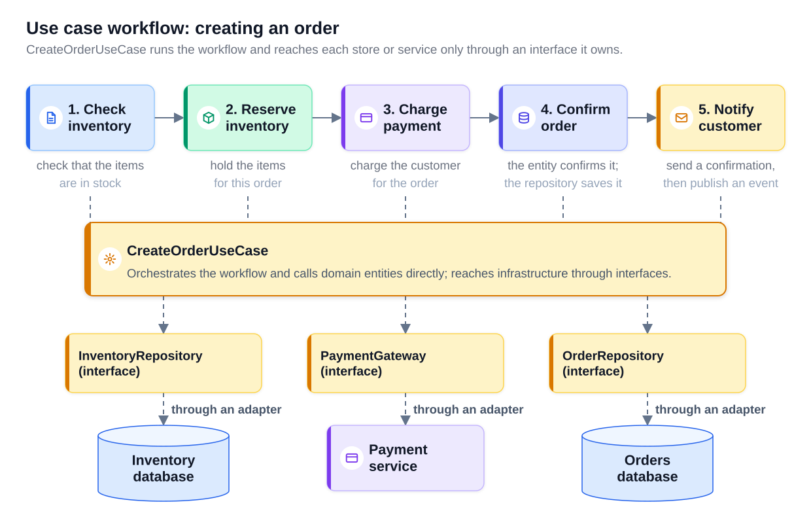
What Use Cases Must Not Contain
Just as entities must not import infrastructure, use cases must not import web frameworks, ORMs, database drivers, HTTP client libraries, or message broker clients. They depend on the interfaces they define, not on implementations.
Use cases also must not contain presentation logic.
Deciding which HTTP status code to return for a specific error is not a use case concern.
Deciding what JSON format to use in the response is not a use case concern.
Deciding which error message to show to the user is at the boundary of use cases (they define the error code and a machine-readable message) and adapters (which translate that to whatever the specific channel requires).
The test for whether something belongs in a use case or in an adapter: if removing the HTTP framework and all its concerns leaves the code intact and meaningful, it belongs in the use case.
If removing the HTTP framework requires changing the code, it belongs in the adapter.
Part 5: Ring Three: Interface Adapters
What Interface Adapters Do and Why They Exist
Interface adapters are translators. They sit between the business logic of the inner rings and the specific technologies outside them. They have no business logic of their own.
Their job is purely translation: converting formats, mapping types, calling the right method with the right arguments.
The need for interface adapters comes from the fact that data exists in different formats for different purposes.
An HTTP request carries data as JSON with string keys and arbitrary values.
A use case input object carries data as a typed Python dataclass with validated fields.
A database row carries data as a tuple of column values. A domain entity carries data as a rich object with methods and invariants.
None of these formats is inherently better than the others. Each is appropriate for its context. The HTTP format is appropriate for network transmission.
The typed dataclass format is appropriate for business logic.
The database row format is appropriate for persistence. Interface adapters translate between these formats without leaking any format's concerns into the others.
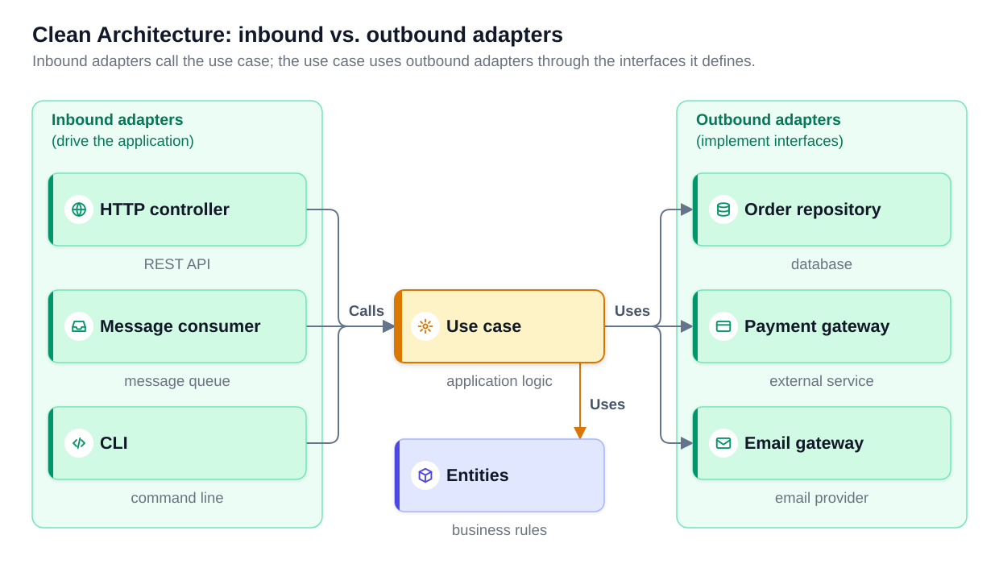
Inbound Adapters: Controllers
Controllers are inbound adapters. They face the outside world and translate external input into use case calls.
A controller in Clean Architecture is deliberately thin. It has exactly three responsibilities.
First, it validates the format of the input (are required fields present, is the JSON well-formed, is the authentication header present). It does not apply business rules: whether an order can be cancelled is a business rule for the use case.
Whether the request body contains a valid JSON object is a format rule for the controller.
Second, it constructs the use case input data structure from the external data.
Third, it calls the use case with that input. In Martin's full model, formatting the result for the caller is a separate job for a presenter, described in the next subsection.
A Clean Architecture controller does not contain business logic. It does not decide whether an order can be created based on business conditions. It does not apply discounts or calculate prices.
If a developer finds themselves adding a business rule to a controller, it is a signal that the rule belongs in the use case instead.
Controllers also should not import the web framework's request and response objects in their core logic if possible.
A controller that works with an abstract HttpRequest and HttpResponse data structure rather than Flask's request object directly can be tested without a running Flask server.
The Flask-specific wiring (converting Flask's request to the abstract HttpRequest) belongs in the frameworks ring, not the interface adapters ring.
Input Boundaries, Output Boundaries, and Presenters
Martin's model names the path a request takes through the inner rings more precisely than Hexagonal Architecture does. It uses two interfaces at the edge of the use cases ring.
The input boundary is the interface the controller calls. The use case class, which Martin calls an interactor, implements it. In this lesson's examples, the use case's execute method and its input data structure play the role of the input boundary.
The output boundary is an interface that the use case defines and calls when it has a result. The use case passes its output data structure to that interface instead of returning a response. A presenter, a class in the interface adapters ring, implements the output boundary. It turns the output data into a view model: plain data that is ready to display, such as a formatted price, a status label, or an HTTP status code.
A view then displays the view model. The view has almost no logic of its own, so it needs little testing. The presenter holds every formatting decision and can be tested with a direct method call. This split is called the Humble Object pattern, which the FAQ at the end of this lesson explains.
Both boundaries belong to the use cases ring, so the dependency rule still holds. The controller imports the input boundary, the presenter imports the output boundary, and the use case imports neither the controller nor the presenter. Control flows outward from the use case to the presenter, while the source code dependency points inward.
Many web codebases use a simpler variant. The use case returns its output data, and the controller formats it or passes it to a presenter. The composition root later in this lesson wires that simpler variant, with no separate presenter.
Outbound Adapters: Repositories and Gateways
Outbound adapters (repositories, gateways, event publishers) implement the interfaces that use cases defined. They face the infrastructure and translate use case calls into the specific operations that a particular technology requires.
A PostgreSQL repository adapter implements the OrderRepository interface by executing SQL.
When the use case calls repository.find_by_id(order_id), the adapter executes a SELECT statement, maps the returned rows to the domain entity's attributes, and reconstructs the entity.
When the use case calls repository.save(order), the adapter executes INSERT or UPDATE statements, mapping the entity's state to column values.
The adapter's translation work includes two directions. Saving an entity means extracting its state and translating it to the database's format: primitive types, column names, nullable handling, type coercions.
Loading an entity means executing the query, receiving the result set, and reconstructing the entity from its stored state. This reconstruction, called re-hydration, is often the most delicate part of the adapter's job. It must restore the entity to a valid state without going through the entity's public constructor, which might assume the entity is new rather than existing.
A Stripe payment gateway adapter implements the PaymentGateway interface by calling Stripe's SDK.
When the use case calls payment_gateway.charge(order_id, customer_id, amount, payment_method_token), the adapter calls stripe.PaymentIntent.create(...), handles Stripe-specific exceptions (CardError, StripeError), and translates them into the generic PaymentResult data structure that the use case defined.
All Stripe-specific code is in this one adapter.
The use case never sees a Stripe import.
The isolation of technology-specific code in adapters is what enables infrastructure replacement. Replacing PostgreSQL with MongoDB means writing a new MongoOrderRepository adapter that implements the same OrderRepository interface, then building it in the composition root. When the interface states only what the use case needs, no use case, no entity, and no other adapter changes. Differences in transactions and query patterns can still force a change to the interface, so the technology swap is concentrated in one class but not always confined to it.
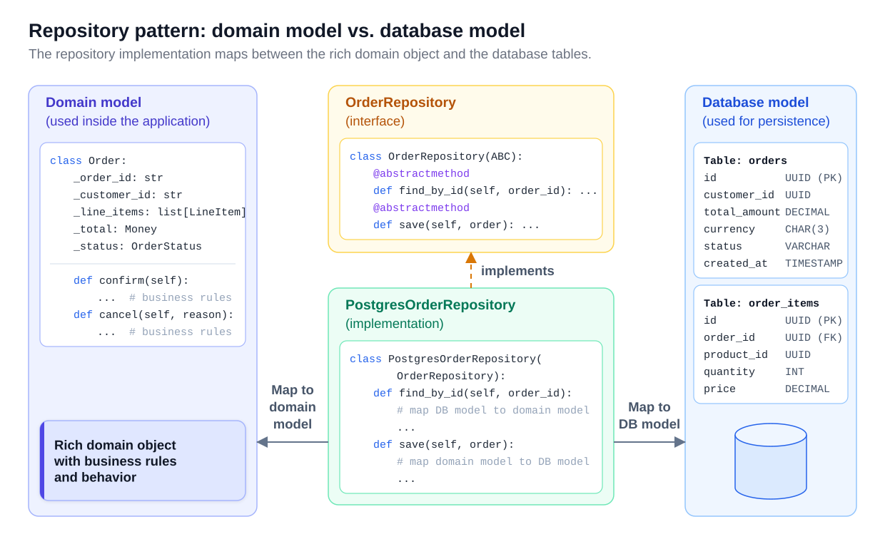
The Interface Adapters Ring's Own Imports
Interface adapters can import from the use cases ring (the interfaces they implement, the input and output data structures they work with) and from the entities ring (the domain objects they reconstruct). They can import from the infrastructure ring only in the sense that the outbound adapters use infrastructure libraries (psycopg2, stripe, boto3) to do their translation work.
What interface adapters must not do is call each other directly.
The PostgreSQL adapter should not call the Stripe adapter.
The HTTP controller should not directly query the database. All cross-adapter coordination happens through the use case, which is the appropriate place for workflow orchestration.
Part 6: Ring Four: Frameworks and Drivers
What the Outermost Ring Contains and Why It Is Deliberately Thin on Logic
The outermost ring contains all the technology-specific wiring: the Flask app object, the SQLAlchemy engine, the Kafka producer, the Stripe SDK initialization, the logging configuration, and the composition root that wires everything together. This ring depends on everything inside it. Nothing inside depends on it.
Clean Architecture deliberately treats the outermost ring as the least important part of the design.
The web framework is described as a detail. The database is described as a detail. The message queue is described as a detail. This framing is intentional: these technologies are choices, and like all choices they should be reversible.
When a codebase is structured around its web framework, as many framework-first codebases are, a framework upgrade or replacement reaches into the business logic.
When the framework is a plug-in tool in the outermost ring, the same change touches only the outermost ring.
This does not mean frameworks are unimportant. Flask, Django, FastAPI, Spring, and Rails are excellent tools. The point is that they should not define the structure of your business logic. Your business logic should be structured around your business concepts, and the framework should be plugged into that structure from the outside.
The Composition Root
The composition root also lives in this ring. Hexagonal (Ports and Adapters) covers it in full: it is the one place where the application builds every concrete adapter, passes the adapters to the use cases, and passes the use cases to the controllers. It is the one place that changes when the application switches between production and development adapters.
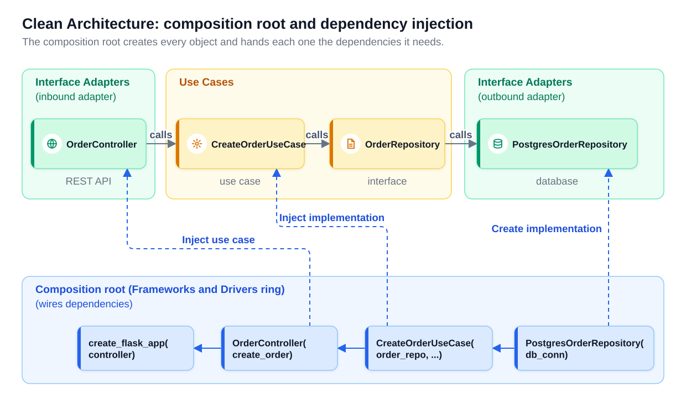
The code below is the composition root for the production build and the development build. It lives in the one file whose imports reach every ring, and its two functions differ only in the adapters they pass to the same use case.
The two wiring functions demonstrate the architectural payoff in the most concrete way possible: the same business logic running with completely different infrastructure, the switch requiring only a change to one function.
Part 7: How Onion Architecture Names the Same Things Differently
Jeffrey Palermo's Onion Architecture uses different vocabulary for the same rings. Understanding the mapping prevents confusion when engineers encounter both:
Palermo calls the innermost ring the Domain Model: the entities, value objects, and domain rules. This maps directly to Clean Architecture's Entities ring.
Palermo adds an explicit Domain Services ring just outside the domain model: business logic that spans multiple entities or requires coordination that does not belong on a single entity.
A pricing service that computes order totals based on customer tier and applied promotions would live here.
Clean Architecture does not name domain services. Logic that holds across applications, such as this pricing rule, belongs with the Entities ring. Workflow logic that is specific to one application belongs in the use cases ring.
Palermo calls the third ring Application Services: what Clean Architecture calls Use Cases. These are the application-specific workflows that orchestrate the domain model and domain services to accomplish business goals.
Palermo places everything outside the application services ring on the outer edge: the user interface, Infrastructure, and tests. Clean Architecture splits that outer edge into Interface Adapters and Frameworks and Drivers.
The key insight Palermo emphasized that Martin later reinforced is identical in both: the domain model at the center should have no dependencies on anything outside it. The dependency direction runs from infrastructure toward the domain, never the other way around. This is the principle both architectures are built on.
In practice, a team can use either naming convention.
The implementation consequences are identical. Engineers often use the terms loosely. When they do distinguish them, "Clean Architecture" usually signals the four named rings, and "Onion Architecture" signals the emphasis on isolating the domain model.
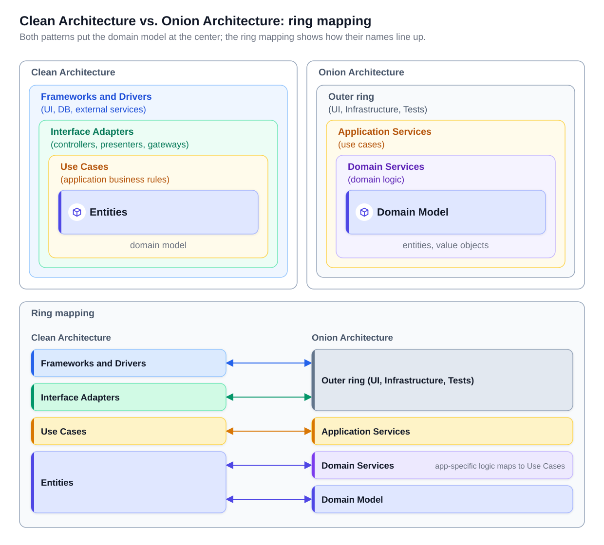
Part 8: How Clean Architecture Differs From Other Patterns
Clean Architecture vs Layered Architecture
Traditional layered architecture (presentation, business logic, data access) organizes code into horizontal tiers based on technical role. This is an improvement over no organization at all. Code is easier to find, concerns are partly separated, and the database access code does not appear in the UI.
The critical difference is who owns the repository interface, and therefore which way the source code dependency points.
Layered (N-Layer) Architecture already inverted two boundaries: the business layer defines repository and gateway interfaces, and the data access and integration layers implement them. Layered architecture permits that design but does not require it. When a team places the interface in the data access package instead, the business package imports from the data access package, and the dependency points down toward the database. Both designs are called layered, and a diagram of a stack with the database at the bottom does not say which one a codebase follows.
In Clean Architecture, the inversion is the rule at every boundary. The use cases ring defines what it needs from persistence (the repository interface). The data access code (PostgreSQL adapter) depends on that interface. The dependency arrow between business logic and data access points inward toward the business logic, and the dependency rule forbids placing the interface anywhere else.
The testing consequence follows from ownership. A business test in the layered design where the data access package owns the interface must import the data access package to reach the interface, and the database driver comes with it. A use case test in Clean Architecture passes in an in-memory implementation of an interface the use case owns and never loads anything database-related.
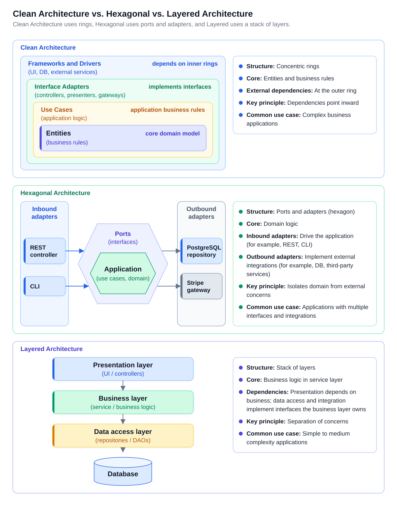
Clean Architecture vs Hexagonal Architecture
Hexagonal (Ports and Adapters) and Clean Architecture share the same dependency rule: the domain does not depend on infrastructure, infrastructure depends on the domain. A repository interface owned by the use cases ring in this lesson is the same thing as a driven port in that lesson. The two patterns differ in how they name and subdivide the inside.
Hexagonal Architecture has a flat two-sided model: a hexagon with inbound ports (through which the outside world drives the application) and outbound ports (through which the application drives the outside world). Everything inside the hexagon is "the application."
The port-and-adapter model describes the boundary but does not prescribe internal structure.
Clean Architecture adds explicit internal rings: entities separate from use cases. This distinction matters when the application is large enough that the lack of internal structure within the hexagon becomes a problem.
An enterprise application with hundreds of use cases and a rich domain model benefits from the explicit separation of enterprise rules (entities) from application rules (use cases). A smaller application may find the flat hexagonal model sufficient.
Many teams implement both simultaneously: the outer boundary follows the hexagonal ports-and-adapters model, while the inner structure follows Clean Architecture's entity-use-case separation. The patterns complement each other rather than competing.
Clean Architecture vs Domain-Driven Design
Domain-Driven Design (DDD) is a design philosophy and set of patterns for modeling complex domains.
Clean Architecture is an architectural pattern about dependency direction and ring structure. They are not competing alternatives: they work together.
DDD concepts (aggregates, entities, value objects, domain events, repositories) describe how to structure the domain model inside the inner rings of Clean Architecture.
The Entities ring is a natural home for DDD aggregates (clusters of domain objects that are loaded, changed, and saved as one unit) and value objects. It is also the home for DDD domain services whose rules hold across applications.
The use cases ring is a natural home for DDD application services. A bounded context is a part of the business in which each term has one exact meaning, such as "order" in sales versus "order" in shipping. The bounded context concept guides how to split a large system into modules or services, each with its own rings.
A team using Clean Architecture with DDD uses DDD to design the contents of the inner rings and Clean Architecture to enforce the dependency boundaries around those rings.
Part 9: The Testing Strategy
Hexagonal (Ports and Adapters) explains the testing advantage in detail: because the inner code owns its interfaces, a test passes in in-memory implementations and never loads a database. Clean Architecture keeps that advantage and adds one thing. Entities and use cases sit in separate rings, so they are tested separately, and the test suite takes the shape described below.
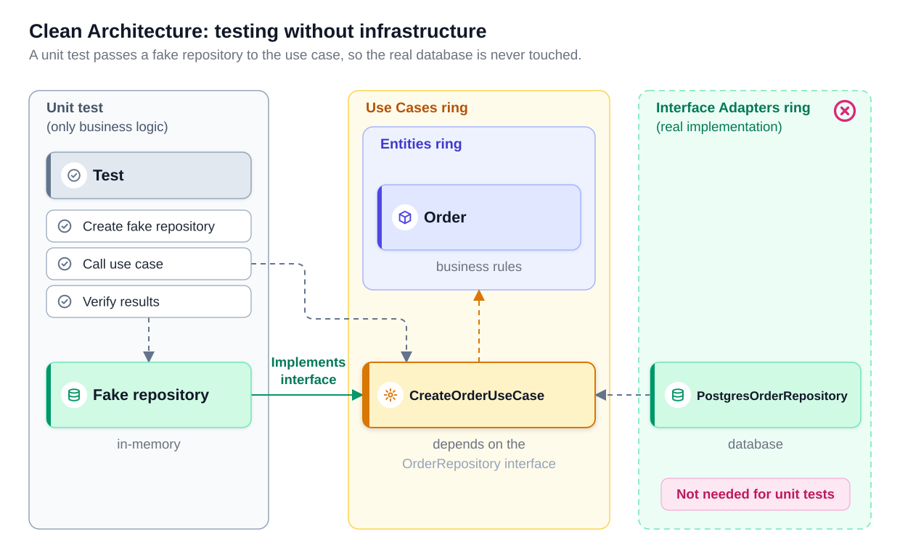
The Testing Pyramid in Clean Architecture
Clean Architecture produces a natural testing pyramid.
The base of the pyramid (the largest number of tests, the fastest to run, covering the most ground) is unit tests for entities: pure business rule verification with no dependencies.
The middle tier is unit tests for use cases: application workflow verification with in-memory stubs.
A smaller tier is integration tests for the adapters: verifying that the PostgreSQL repository correctly persists and retrieves entities, that the Stripe gateway correctly calls the Stripe API, that the Kafka publisher correctly formats and sends messages.
The smallest and slowest tier is end-to-end tests for the complete wired system.
Many codebases end up with a different shape.
They have very few unit tests, because the business logic is coupled to infrastructure and unit tests are impractical. They have a large middle tier of integration tests, because that is the only way to test meaningful behavior, and a few end-to-end tests. That shape is a diamond, or an inverted pyramid when end-to-end tests dominate. Either shape is slow, fragile, and gives poor feedback.
Clean Architecture's enforced ring boundaries produce the correct pyramid naturally: the most tests are the fastest tests covering the most important logic.
The fewest tests are the slowest tests covering the infrastructure glue. Fast tests run on every code change. Slow tests run in CI pipelines. Developers get immediate feedback about business rule regressions.
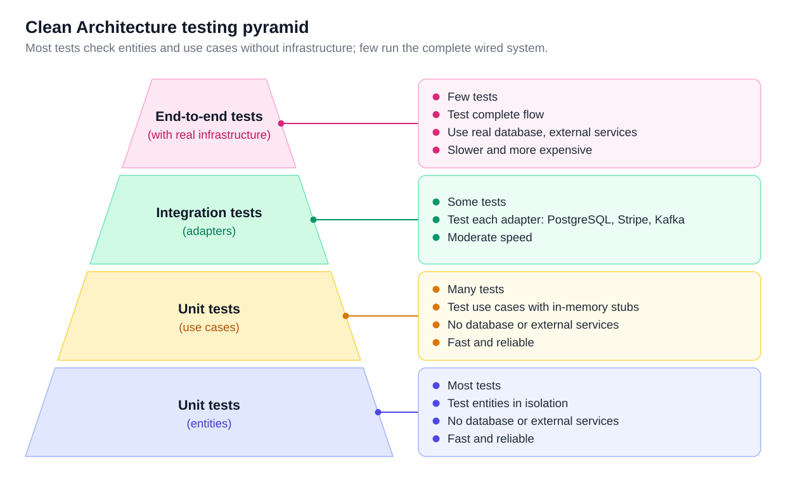
Part 10: When to Use Clean Architecture
The Pattern Is Justified When
Business logic is complex and the cost of testing it with infrastructure is measurably slowing development.
Clean Architecture's testing benefit is immediately valuable when a team spends significant time waiting for database-dependent tests to run. It is equally valuable when tests often break from infrastructure setup issues rather than actual bugs, or when new business rules require complex test scaffolding.
The application needs to be driven from multiple mechanisms.
Many production applications serve their business logic through HTTP APIs, background batch jobs, message queue consumers, and administrative CLI tools simultaneously.
In traditional layered architecture, each driving mechanism requires understanding the full stack.
In Clean Architecture, each driving mechanism is a thin inbound adapter that calls the same use cases. Adding a new driving mechanism is adding a new adapter class, not restructuring the application.
Infrastructure choices may change.
Teams that anticipate switching databases, changing payment providers, adopting event streaming, or moving between email services benefit from infrastructure being isolated to adapter classes.
The swap requires writing a new adapter that implements the existing interface, not modifying business logic.
The codebase is large enough and long-lived enough that the investment in structure compounds over time.
Clean Architecture has upfront costs: more files, more interfaces, a composition root, explicit ring discipline.
For a two-engineer startup building a six-month MVP, these costs may not be justified.
For a ten-engineer team building a system expected to run for five years, the costs are typically well-justified.
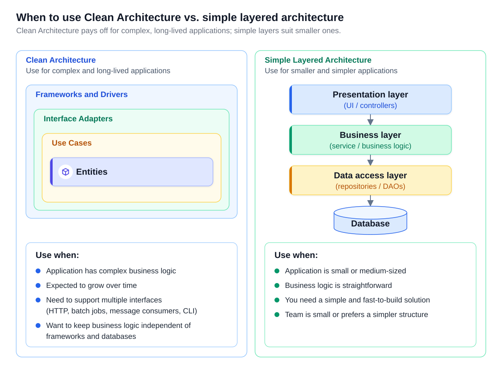
The Pattern Is Not Justified When
The application is genuinely simple: a small CRUD API with no significant business rules, a quick internal tool, a short-lived prototype. Adding four rings, explicit interfaces, input and output data structures, and a composition root to a three-table CRUD application produces overhead with no payoff.
The team is not ready to maintain the discipline.
Clean Architecture requires that everyone on the team understands the ring boundaries and enforces them in code review.
A team that adds infrastructure imports to use cases "just this once" and then does it again and again ends up with the structural complexity of Clean Architecture without any of its benefits.
The domain is not the application's core value.
Some applications are primarily about infrastructure orchestration rather than business rules: a deployment automation tool, a data pipeline, an infrastructure monitoring system. These applications may not have significant business rules to isolate in inner rings, making Clean Architecture's primary payoff unavailable.
FAQs
Q: What is the difference between a Clean Architecture entity and an ORM model?
They look similar (both are classes with fields) but serve completely different purposes and live in different rings.
A Clean Architecture entity is a domain object that contains enterprise business rules. It is a pure class with methods that enforce invariants. It imports nothing from any ORM or database library. Its purpose is to be the authoritative source of business rule enforcement.
An ORM model is a persistence mapping object. It represents a database table structure. It inherits from framework base classes (Django's Model, SQLAlchemy's declarative base). Its purpose is to translate between Python objects and database rows.
Clean Architecture keeps the two separate. If your domain entity inherits from SQLAlchemy's declarative base, you have imported a database library into the innermost ring, which violates the dependency rule. The entity can still be created and tested in memory, because SQLAlchemy builds mapped objects without a database connection. The real cost is coupling: every test of a business rule now loads the persistence library, and a change to that library or to the table mapping can force a change to the entity.
The adapter layer (repository implementations) is specifically responsible for translating between these two worlds: converting domain entities to ORM models for persistence, and converting ORM models back to domain entities when loading from the database.
Q: Where exactly does validation belong?
Format validation, such as checking that the request body is valid JSON with the required fields, belongs in the controller in the interface adapters ring. Business rule validation, such as whether this order can be cancelled in its current status, belongs in the Entities ring and the use cases ring. Hexagonal (Ports and Adapters) covers the same split in more detail.
A quick test: if the check would still exist when the process ran on paper, it is a business rule and belongs in the inner rings. If it concerns only the format of digital data, it belongs in the adapter.
Q: How do you handle database transactions in Clean Architecture?
Transactions are an infrastructure concern, so the use case never calls db.commit() directly. A common approach is a unit of work: an object that groups several repository writes into one transaction and commits or rolls them back together. The use cases ring defines the unit of work interface, and an adapter implements it with a real database transaction. Hexagonal (Ports and Adapters) shows the same arrangement as a port.
Q: What is the Humble Object Pattern and why does it matter?
The Humble Object Pattern is a technique for making difficult-to-test code testable by separating the testable logic from the untestable glue. The "humble" object is left with only the untestable, infrastructure-bound behavior. The testable logic is extracted into a separate object.
Martin applies the pattern at the boundary between the presenter and the view. The presenter holds all the formatting logic and is easy to test with a direct method call. The view only displays the view model it receives, so it is the humble object. He applies the same split at database gateways, where the gateway implementation is humble and the use case that calls it holds the testable logic.
The same idea explains why controllers stay thin, although Martin does not call controllers humble objects. The code that touches Flask's request object directly is humble and lives in the frameworks ring. The controller logic that works on an abstract request, as Part 5 describes, and the use case it calls can both be tested without a running server.
Q: When is Clean Architecture overkill?
For genuinely simple applications, such as a three-table CRUD API with no significant business rules, it adds structure with no benefit. A simple layered architecture has less indirection and is easier to maintain in that case. Part 10 lists the conditions that justify the cost.
A practical test: if your business rule tests run in seconds without a database and give you high confidence, Clean Architecture is working as intended. If they require database setup, take minutes, and break more often from infrastructure changes than from business logic bugs, Clean Architecture has either not been applied or has been applied incorrectly.
Key Takeaways
-
Clean Architecture and Onion Architecture are the same pattern with different naming. Both place enterprise business rules at the center, surround them with application business rules, and keep interface translation, frameworks, and infrastructure in the outer rings.
-
The dependency rule is the single structural constraint that creates all the pattern's value. Source code dependencies can only point inward. An inner ring that imports an outer ring has broken the contract and degraded the architecture.
-
Entities contain enterprise-level business rules: the rules that would exist in the business without any software, encoded as pure domain objects with no infrastructure imports. They change only when the business itself changes.
-
Use cases contain application-level business rules: the specific workflows of this application. They define their own input and output types and the interfaces they need from infrastructure. They change when the application's workflows change.
-
Interface adapters translate without containing business logic. Inbound adapters (controllers) translate external input to use case calls. Presenters format use case output for display. Outbound adapters (repositories, gateways) implement use case interfaces using specific technologies.
-
The outermost ring contains all the details: frameworks, databases, external services. The composition root in this ring wires the entire application. Changing infrastructure usually means writing a new adapter and changing the composition root, without touching the inner rings.
-
The primary payoff is fast, comprehensive, reliable testing. Entity tests run in microseconds with zero dependencies. Use case tests run in milliseconds with in-memory stubs. The business logic test suite stays fast as the application grows, because none of it waits on infrastructure.
-
The Humble Object Pattern keeps hard-to-test code trivial. Martin applies it at the view: the presenter holds the formatting logic and is tested directly, while the view only displays. The same idea keeps controllers thin and moves meaningful logic into use cases.
-
Clean Architecture is justified when business logic is complex, when fast comprehensive testing matters, when multiple driving mechanisms are needed, or when infrastructure may change. It is over-engineering for genuinely simple applications.
-
In a system design interview, name the four rings, state the dependency rule, and explain what each ring is forbidden from importing. Then explain how in-memory stubs enable fast business rule testing, and describe the composition root as the single place where infrastructure is wired in. That precision demonstrates architectural depth beyond vocabulary.
0 Comments
No comments yet. Be the first to start the discussion!
Reading Progress
0%
On This Page
Know the Vocabulary
Part 1: The Problem Being Solved
Why Codebases Without Boundaries Fail the Same Way Every Time
The Dependency Rule
Part 2: The Concentric Ring Model
Visualizing the Structure
Part 3: Ring One: Entities (Enterprise Business Rules)
What Entities Are and Why They Are the Most Important Ring
What Entities Contain
How Entities Enforce Business Rules
The Stability of the Entity Ring
Part 4: Ring Two: Use Cases (Application Business Rules)
What Use Cases Are and How They Differ From Entities
The Input and Output Data Structures
The Ports That Use Cases Define
What Use Cases Must Not Contain
Part 5: Ring Three: Interface Adapters
What Interface Adapters Do and Why They Exist
Inbound Adapters: Controllers
Input Boundaries, Output Boundaries, and Presenters
Outbound Adapters: Repositories and Gateways
The Interface Adapters Ring's Own Imports
Part 6: Ring Four: Frameworks and Drivers
What the Outermost Ring Contains and Why It Is Deliberately Thin on Logic
The Composition Root
Part 7: How Onion Architecture Names the Same Things Differently
Part 8: How Clean Architecture Differs From Other Patterns
Clean Architecture vs Layered Architecture
Clean Architecture vs Hexagonal Architecture
Clean Architecture vs Domain-Driven Design
Part 9: The Testing Strategy
The Testing Pyramid in Clean Architecture
Part 10: When to Use Clean Architecture
The Pattern Is Justified When
The Pattern Is Not Justified When
FAQs
Key Takeaways